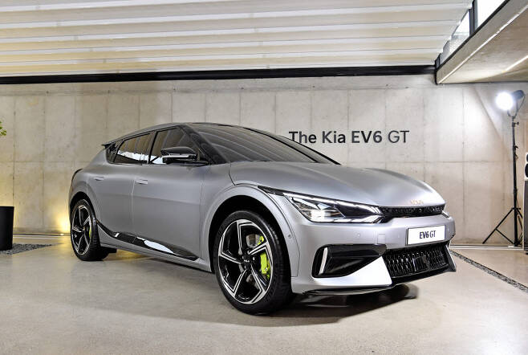

차량용 반도체 수급난에 따른 수요와 공급 불균형으로 소비자 선호도가 높은 인기 전기차 출고 일정이 1년 이상 밀렸다. 소비자가 올해 남은 날에 신차를 계약해도 새해가 아니라 2023년에 차량을 인수할 수 있는 상황이다. 물량이 절대적으로 부족해지면서 중고차 가격이 신차 가격을 추월하거나 아예 보조금을 포기하고 구매하는 사례도 나오고 있다.
27일 신규 계약 기준으로 기아 'EV6'나 제네시스 'GV60' 등 최신형 인기 전기차는 새해 출고 여부가 불확실하다. 일선 영업점은 계약부터 출고까지 기아 EV6 13개월, 제네시스 GV60 12개월, 아이오닉5 8개월 이상 필요하다고 안내하고 있다. 실제 출고일은 지방자치단체별 구매 보조금 수급 현황에 따라 다시 바뀔 수 있다. 기아 영업점 관계자는 “반도체가 많이 들어가는 EV6는 1년 이상 주문이 밀려 있어서 지금 계약할 경우 언제 출고된다고 확답하기 어렵다”면서 “본사로부터 고객 불만이 발생하지 않도록 출고 일정을 수시로 전달하라는 내용의 공문만 받은 상황”이라고 말했다.